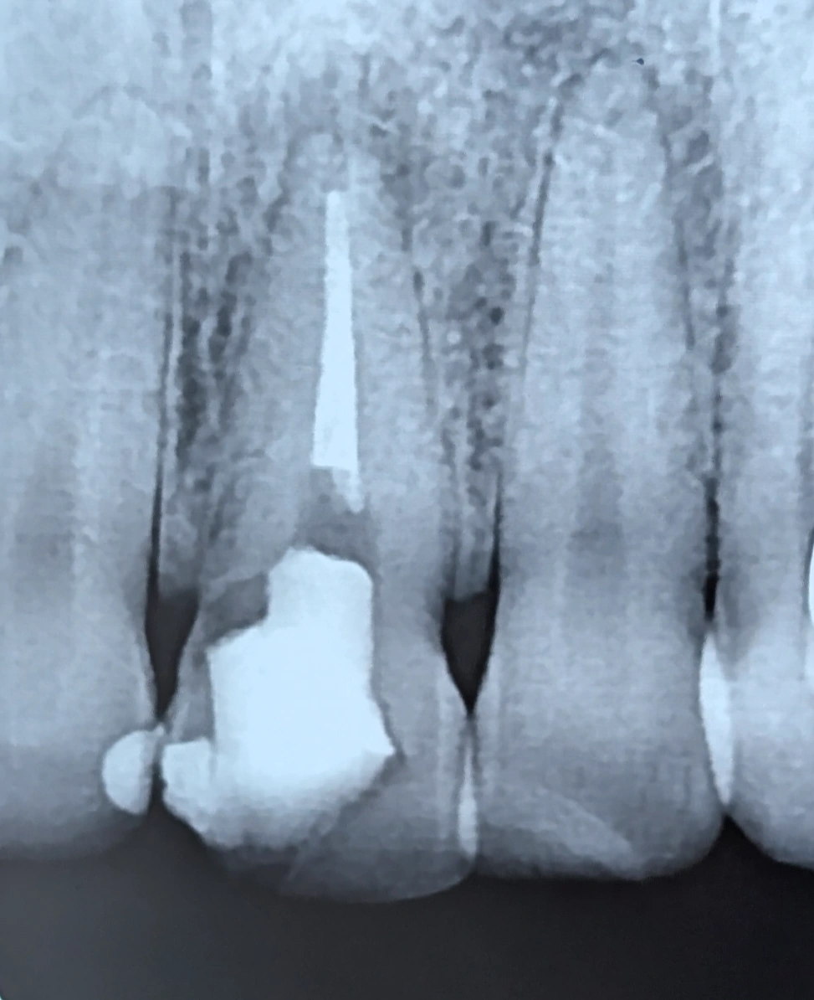

Chairside 22
چالشِ روکش یا ترمیم در دندانِ قدامی با تخریبِ وسیعِ داخلی

بیمار برای دندانِ یک مراجعه کرد. یک ترمیمِ کامپوزیتِ وسیع داشت که هم فرم و هم رنگش نامناسب بود. خودش میگفت این دندان بارها کامپوزیت شده ولی هنوز راضی نبوده، و برای زیبایی درخواستِ روکش داشت.
عکسِ پریاپیکال گرفتم. در گرافی تخریبِ وسیعِ داخلی دیده میشد و دیوارهی مزیال خیلی نازک بود.
به بیمار توضیح دادم که دندان از داخل تخریبِ وسیع دارد، و اگر بخواهم روکش کنم باید از بیرون هم بتراشم. در این حالت همان دیوارهی نازکی هم که برایش مانده از بین میرود. یعنی روکش در این شرایط عمرِ دندان را کم میکند، نه زیاد. برخلافِ تصورِ بیمار که روکش را راهِ نجات میدید، اینجا روکش خودش عاملِ تضعیف بود.
به او گفتم به جای روکش دنبالِ ترمیم باشد. گفت ترمیم زیاد کرده و راضی نبوده. توضیح دادم که مشکل صرفِ ترمیم بودن یا نبودن نیست، بلکه اصولی انجام شدنِ آن است. معرفیاش کردم پیشِ متخصصِ ترمیمی تا یک درمانِ ادهزیوِ اصولی برایش انجام شود.
روندِ رسیدن به این تصمیم به این ترتیب بود:
- ارزیابیِ خواستهی بیمار (روکشِ زیبایی) در برابرِ وضعیتِ واقعیِ دندان.
- بررسیِ گرافی: تخریبِ وسیعِ داخلی و دیوارهی مزیالِ بسیار نازک.
- سنجشِ پیامدِ روکش: نیاز به تراشِ بیرونی و از بین رفتنِ آخرین دیوارهی باقیمانده، یعنی کاهشِ عمرِ دندان.
- تصمیم به ارجاعِ بیمار برای ترمیمِ ادهزیوِ اصولی به جای روکش.
️گاهی خواستهی بیمار (روکش برای زیبایی) دقیقاً همان کاری است که به دندانش بیشترین آسیب را میزند.
️نارضایتی از ترمیمهای قبلی به معنیِ نادرست بودنِ گزینهی ترمیم نیست؛ گاهی مشکل در اجرا بوده، نه در انتخابِ درمان.
محتوای این صفحه برای استفادهٔ آموزشی دندانپزشکان و دانشجویان دندانپزشکی تهیه شده است.